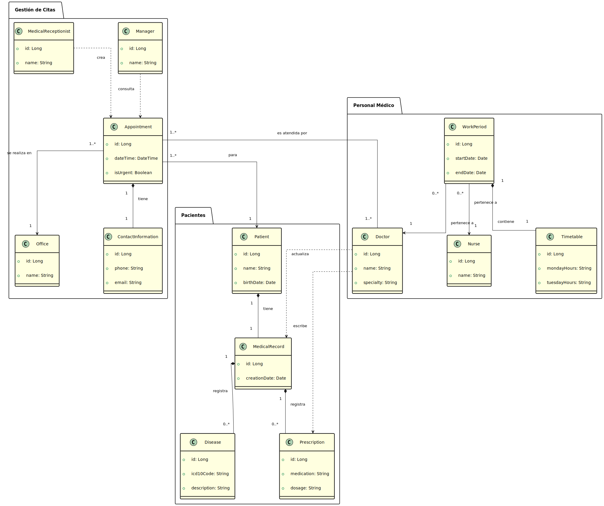

UML Entity-Relationship Diagram Diagrama de Entidad-Relación UML
The following diagram shows the main entities of the system and their relationships. El siguiente diagrama muestra las entidades principales del sistema y sus relaciones.

This diagram helps to understand the data structure, the tables that will be created in the database, and the connections between them. Este diagrama es útil para entender la estructura de datos, las tablas que se crearán en la base de datos y las conexiones entre ellas.